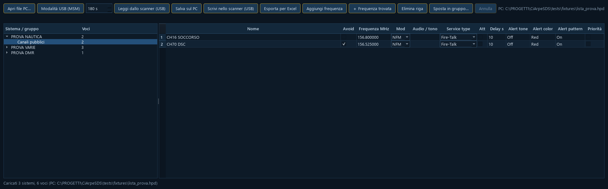

Guardalo in 90 secondi (video in inglese)
Cosa fa
Audio in rete, subito
All'avvio senti lo scanner dal PC. Bassi e alti, taglio dei subtoni, filtro voce e riduzione del fruscio che conserva le parole.
Cascata RF
Lo spettro interno dello SDS200 fino a 17 MHz: clic su un picco e lo ascolti, manopola e passi regolabili.
Ricerca DA–A con il modo
Scrivi due frequenze, scegli AM/NFM/FM e lo scanner cerca lì. STOP, RIPRENDI e AVANTI quando trova qualcosa.
Close Call e Discovery
Trova i trasmettitori vicini e le frequenze attive; le trovate finiscono in «Colpi ricerca» con durata e riascolto.
Dalla ricerca alla lista
Una frequenza trovata va nel gruppo che vuoi con un clic: «＋ Frequenza trovata» e «✔ Inserisci qui».
Editor della lista
Lista dei canali a foglio: modifica, sposta, esporta per Excel, leggi e scrivi lo scanner via USB con copia di sicurezza.
Ascolto dal telefono
Una pagina web sulla rete di casa: audio, frequenza, canale, S-meter e comandi dello scanner dal cellulare.
Registrazioni e archivio
Una registrazione per frequenza al giorno, attività, statistiche per ora e giorno, avvisi sui canali che ti interessano.
La scansione non si blocca
Salto automatico dei canali sempre in trasmissione, AVOID temporaneo e avviso se lo scanner smette di rispondere.
Display e tasti dello SDS200
Lo schermo dello scanner riprodotto dal vivo, con tastiera, manopola, CHANNEL, AVOID, volume e squelch.
Decoder
DSC incluso; POCSAG, FLEX, APRS e ACARS con strumenti gratuiti aggiuntivi (vedi la guida).
Italiano e inglese
Interfaccia e guida nelle due lingue, con un clic sulla bandierina.
Com'è fatto

Prezzo
Prova gratuita
- Tutte le funzioni per 14 giorni dal primo avvio
- Nessuna registrazione, nessuna carta
- Lista di esempio con frequenze radioamatori
Licenza completa
- Pagamento unico con PayPal, nessun abbonamento
- Codice di attivazione via email, di solito entro un giorno
- Funziona senza internet, sui tuoi PC
- Rimborso entro 14 giorni senza motivo
Nella nota del pagamento scrivi «CiArpeSDS». Il codice arriva all'email del tuo conto PayPal. Condizioni di vendita e privacy
Come si usa
- Scarica lo ZIP della prova ed estrai tutta la cartella (es. in Documenti).
- Avvia
CiArpeSDS.exe. Windows può mostrare «Editore sconosciuto»: Ulteriori informazioni → Esegui comunque. - Al primo avvio scrivi l'indirizzo IP dello scanner (menu di rete dello SDS200).
- Premi INFO per la guida completa. Senza scanner puoi provarlo con
CiArpeSDS.exe --simulatore. - Ti piace? Acquista la licenza e premi ATTIVA (accanto a INFO): email dell'acquisto e codice ricevuto.
Domande
Funziona con SDS100, BCD436HP o BCD536HP?
No: CiArpeSDS è fatto e provato solo per lo SDS200 (collegamento di rete, audio, comandi e cascata RF). Gli altri modelli non sono supportati.
Devo installare qualcosa?
No. Si estrae la cartella e si avvia il programma. Per disinstallare basta cancellare la cartella.
Cosa succede finiti i 14 giorni?
All'avvio compare la finestra ATTIVA: acquisti la licenza, inserisci il codice e continui con le tue impostazioni, registrazioni e liste.
Posso usarlo su un altro PC?
Sì, sui tuoi computer: lo stesso codice con la stessa email. Conserva l'email con il codice.
Modifica la lista del mio scanner?
Solo quando premi «Scrivi nello scanner», con conferma, e dopo aver salvato una copia di sicurezza della lista attuale.
Manda dati da qualche parte?
No. Il programma lavora sulla tua rete di casa; l'attivazione è verificata sul PC senza internet.
English
CiArpeSDS controls the Uniden SDS200 scanner from a Windows 10/11 PC over the home network: network audio with voice filters, the scanner's RF waterfall, range search with modulation, Close Call and Discovery with STOP / RESUME / NEXT, search hits added to your list in one click, channel list editor with USB read/write and backup, recordings and statistics, and a phone page to listen from another room. Italian and English interface.
Free 14-day trial with all features, then a 29 € one-time licence via PayPal (activation code by email, works offline). Download the trial · Buy with PayPal (write «CiArpeSDS» in the note) · questions: ciarpeservizio@gmail.com